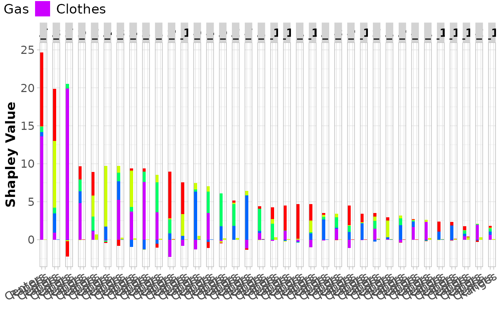

Barplot of Shapley value decomposition into contributions of (Centers, Ranges, and CrossCentersRanges) for interval-valued data.
Source:R/plots_Shapley.r
plot_bar_int_Shapley_decomp.RdBarplot of Shapley value decomposition into contributions of (Centers, Ranges, and CrossCentersRanges) for interval-valued data.
Usage
plot_bar_int_Shapley_decomp(
shapley_decomp,
palette = NULL,
rotate_x = TRUE,
abbrev.obs = 20,
sort.obs = TRUE,
plot_IMah = FALSE
)Arguments
- shapley_decomp
A list of matrices containing the Shapley value decomposition into contributions of (Centers, Ranges, and CrossCentersRanges) for each observation.
- palette
A vector with colors for each feature. If
paletteisNULL(default), the colors are generated usingRColorBrewer.- rotate_x
Logical. If
TRUE(default), the x-axis labels are rotated.- abbrev.obs
Integer. If
abbrev.obs\(> 0\), row names are abbreviated using abbreviate withminlenght = abbrev.obs.- sort.obs
Logical. If
TRUE(default), observations are sorted according to their total Shapley value.- plot_IMah
Logical. If
TRUE, the Interval-Mahalanobis distance (sum of all Shapley values) will be included in the plot.
Value
Returns a barplot that displays the Shapley value decomposition into contributions of (Centers, Ranges, and CrossCentersRanges) for each observation.
Examples
# Create intData object
data(creditcard)
credit_card_int <- creditcard$intData
# Compute Shapley decomposition into contributions of Centers, Ranges, and CrossCentersRanges
# based on IMCD estimates of mean and covariance matrix
credit_card_shap_decomp <- int_Shapley_decomp(credit_card_int)
# Plot Shapley decomposition with contributions of Centers, Ranges, and CrossCentersRanges
plot_bar_int_Shapley_decomp(credit_card_shap_decomp, palette = rainbow(credit_card_int@NVar))
